베기
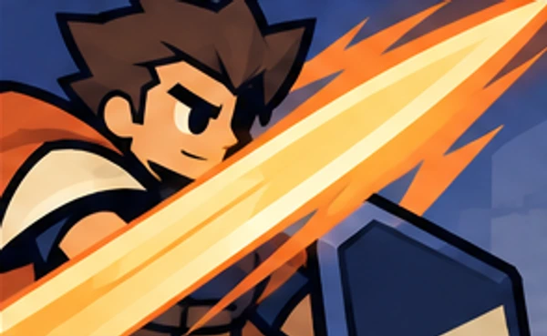
기존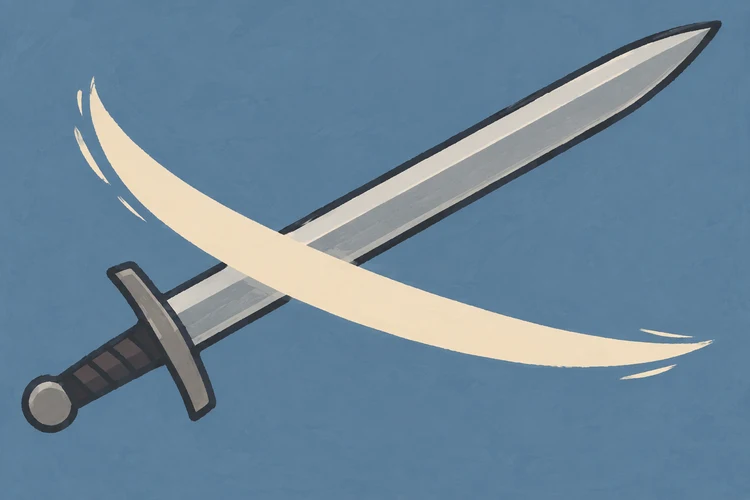
단순화 시안공격 · 비용 1
방어
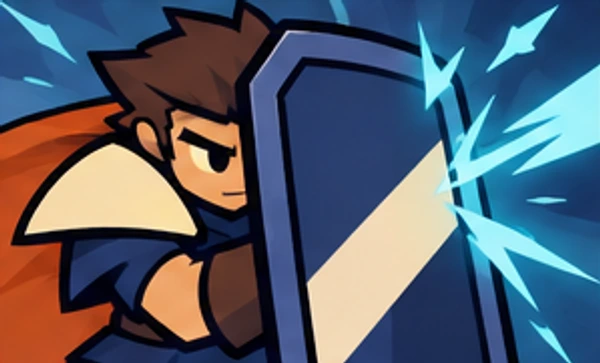
기존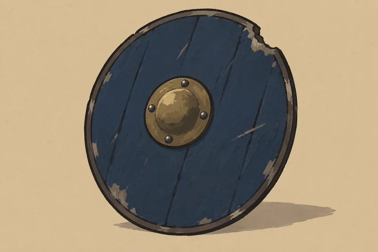
단순화 시안스킬 · 비용 1
강타
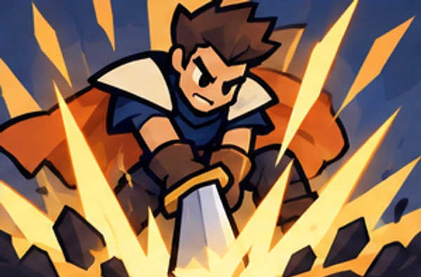
기존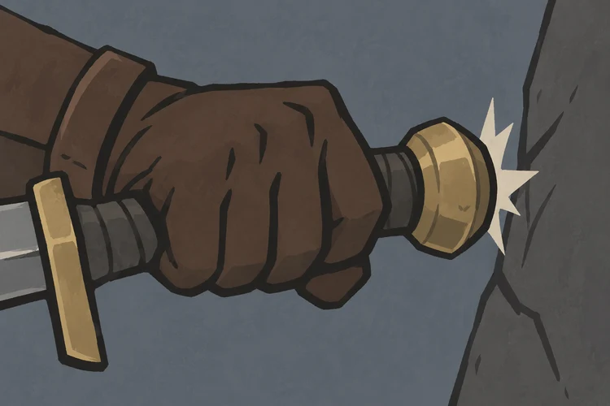
단순화 시안공격 · 비용 2
공격 준비
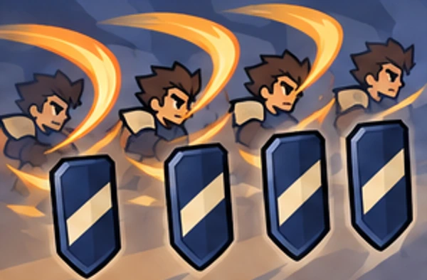
기존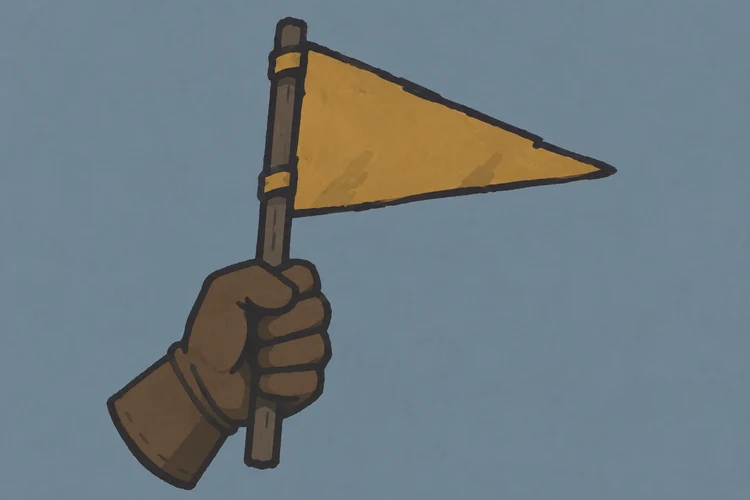
단순화 시안스킬 · 비용 0
칼 갈기
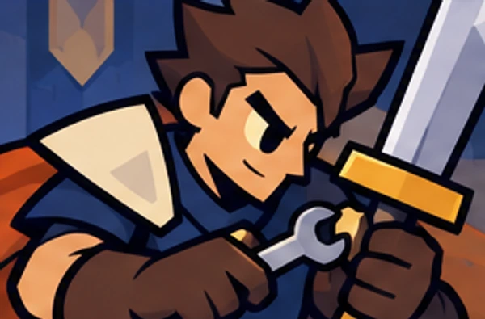
기존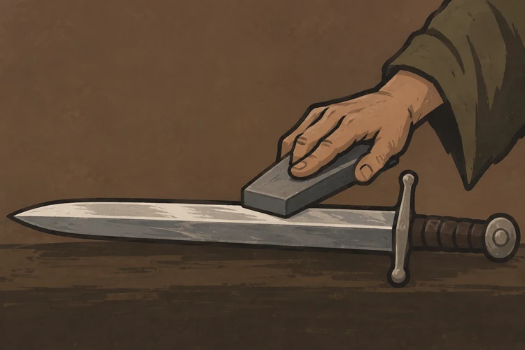
단순화 시안스킬 · 비용 1
빠른 공격
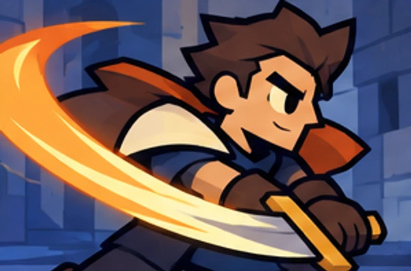
기존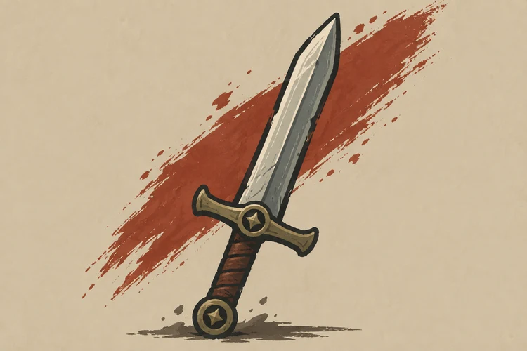
단순화 시안공격 · 비용 0
가볍게 막기
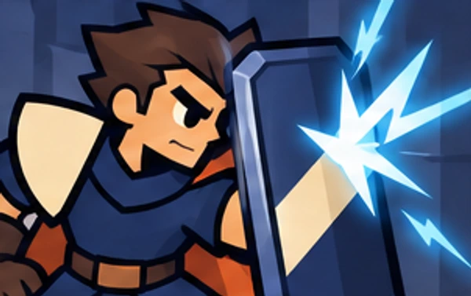
기존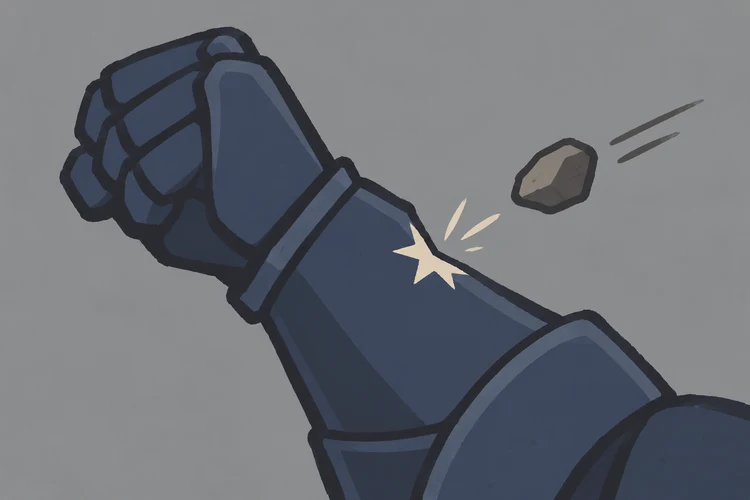
단순화 시안스킬 · 비용 1
휩쓸기
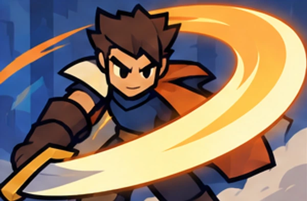
기존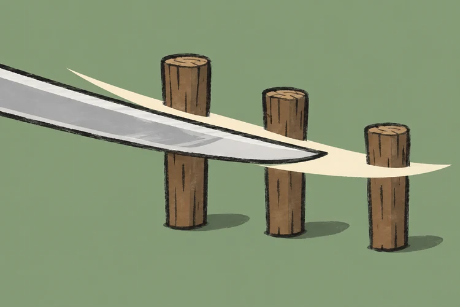
단순화 시안공격 · 비용 1
집중
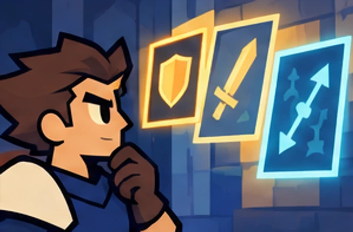
기존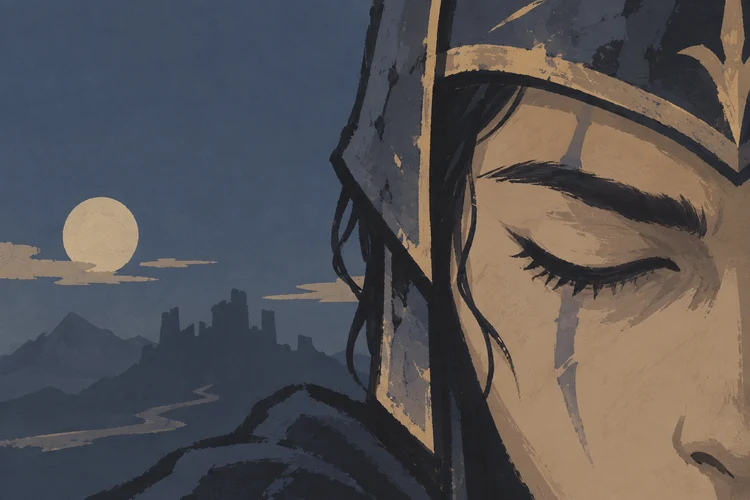
단순화 시안스킬 · 비용 0
힘 키우기
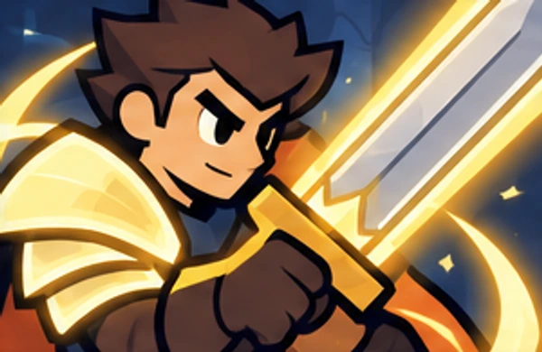
기존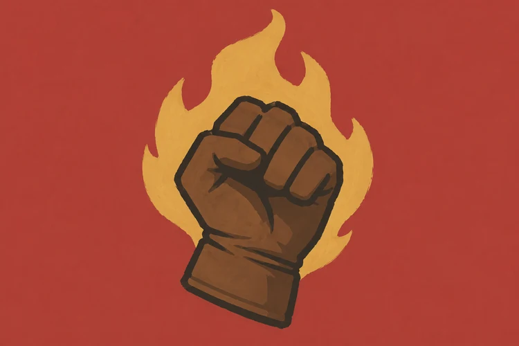
단순화 시안파워 · 비용 1